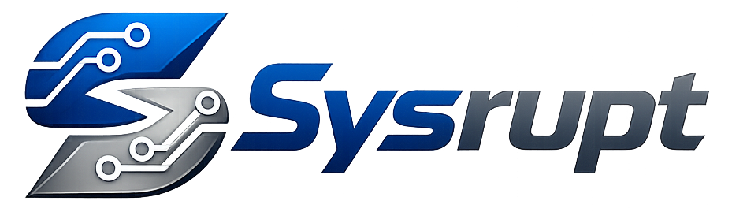
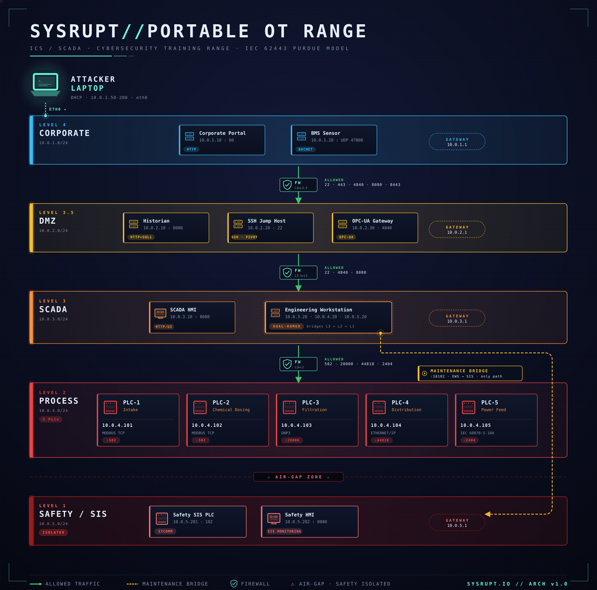

Wired Village/Sysrupt

A hands-on ICS/SCADA cybersecurity training platform that fits in your backpack.
Plug in an Ethernet cable. Hack a water treatment plant. Learn ICS/SCADA security.
The Sysrupt Portable OT Range is a complete industrial cybersecurity training lab running on a single purpose-built Sysrupt appliance. It simulates a real water treatment facility with 5 network zones, 8 industrial protocols, and 10 progressive CTF challenges.

nmap -sT 10.0.1.0/24
10 progressive challenges. 4700 total points. The scoreboard updates automatically.

Five network zones based on the IEC 62443 Purdue Model:
| Zone | Subnet | What's Inside |
|---|---|---|
| Corporate | 10.0.1.0/24 | Web portal, building management |
| DMZ | 10.0.2.0/24 | Historian, OPC-UA gateway, jump host |
| SCADA | 10.0.3.0/24 | HMI, engineering workstation |
| Process | 10.0.4.0/24 | PLCs: Modbus, DNP3, EtherNet/IP, IEC 104 |
| Safety | 10.0.5.0/24 | Safety Instrumented System |
Six custom tools are pre-installed on your Kali machine:
python3 ~/tools/bacnet-tool.py -h # BACnet/IP (Building Automation) python3 ~/tools/dnp3-tool.py -h # DNP3 (Power/Water SCADA) python3 ~/tools/enip-tool.py -h # EtherNet/IP (Rockwell PLCs) python3 ~/tools/iec104-tool.py -h # IEC 104 (Power Grid) python3 ~/tools/modbus-tool.py -h # Modbus TCP (Chemical Dosing) python3 ~/tools/s7comm-tool.py -h # S7comm (Siemens Safety)
Each tool uses the same format:
python3 ~/tools/<tool> -t <target-ip> -c <command>
Common commands: scan, read, write
If tools aren't installed yet:
cd kali-setup sudo bash kali-setup.sh
This installs: nmap, sshpass, opcua-client, pymodbus, python-snap7, c104, cpppo, and all 6 protocol tools.
| Protocol | Port | Real-World Use |
|---|---|---|
| HTTP | 80 | Corporate web systems |
| OPC-UA | 4840 | Industrial data exchange |
| BACnet/IP | 47808 (UDP) | HVAC, lighting, door locks |
| DNP3 | 20000 | Power grids, water utilities |
| EtherNet/IP | 44818 | Factory automation (Rockwell) |
| IEC 104 | 2404 | European power grid SCADA |
| Modbus TCP | 502 | PLCs, chemical dosing |
| S7comm | 102 | Siemens safety controllers |
Plug in. Hack the plant. Learn ICS security.